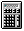

Resistor-Transducer Materials Select a combination from the DROP-DOWN LIST BOX.
Resistor-Transducer Materials Select a combination from the DROP-DOWN LIST BOX.
Ratio ProgramAssociated Application
General Considerations
When utilizing the Span Shift with Temperature Change, Three Points and Simultaneous Span Set and Span Shift with Temperature Change commands, the values Rtl, Rta, and Rth must be entered. These represent the resistance of an Rmod resistor at (l)ow, (a)mbient and (h)igh temperatures, respectively, when installed on the material from which the transducer is fabricated. Alternatively, they may also represent the ratios of the resistances at temperature to the resistance of the Rmod resistor at (a)mbient temperature. (Rta is always unity when expressed as ratios.) In either case the low, ambient, and high temperatures must correspond to those at which span and Rbridge were measured.
As a convenience, the values of Rtl, Rta, and Rth have already been computed for Measurements Group bondable resistors of copper, nickel and Balco alloy when installed on steel and aluminum alloy transducer materials. Utilize the Ratio calculator (tcrcalc.exe) to obtain these values (as ratios) at any three temperatures.
Inputs
Resistor-Transducer Materials Select a combination from the DROP-DOWN LIST BOX.
 Temperatures Enter the low, ambient, and high temperature values.
Temperatures Enter the low, ambient, and high temperature values.
Choose between deg F (US Customary) and deg C (SI) units by pressing the RADIO BUTTON.
Calculations
Rtl, Rta, and Rth Press the COMPUTE BUTTON to calculate the resistance ratios. Rta is always unity.